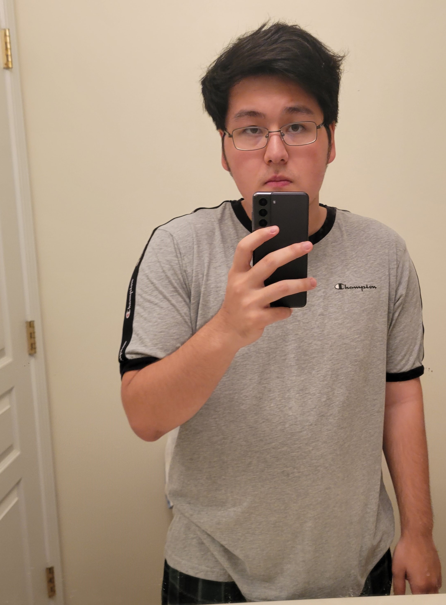

A little introduction
So, who am I, you may ask?
Noah C. Hebert
- Personal Background: I was born on an American military base in South Korea and lived there for the first few years of my life. Being part of a military family I have also lived in many different places throughout the States. We moved to North Carolina about 6 years ago when my father retired from the Army and got a cybersecurity job.
- Professional Background: None related to computer science (yet). My father has many comp-sci connections at his workplace because he specializes in cybersecurity.
- Academic Background: I am a senior here at UNCC, and I will have a bachelor’s degree in Computer Science (concentration in Cybersecurity). I am also minoring in Mathematics. I only have 4 classes to do this semester and 3 to do next semester until I reach my 120 hrs in order to graduate.
- Background in this Subject: I took a small web design class as an elective in high school. That's where I learned the basics of HTML/CSS and to this day that’s where most of my knowledge of this subject comes from.
- Primary Computer Platform: Win11 (school notebook), Linux (home PC).
-
Courses I'm Taking & Why:
- MATH3163 - Intro to Modern Algebra: This is the last class I have to take to fulfill my Math minor. I chose this particular course because I like doing mathematical proofs.
- ITIS3135 - Web App Design and Development: I want to build my own site(s).
- ITIS4260 - Introduction to Cybersecurity Analytics: This course allows me to learn more about cybersecurity which is my concentration.
- ITCS4155 - Software Development Projects: This is my capstone course. I went with this one in particular because I would like to be experienced in both software development and networking/cybersecurity.
- Funny/Interesting Item to Remember me by: I am really good at math.
- I'd Also Like to Share: My main hobbies are video games, programming/technology, running, swimming, reading, and (occasional) writing.